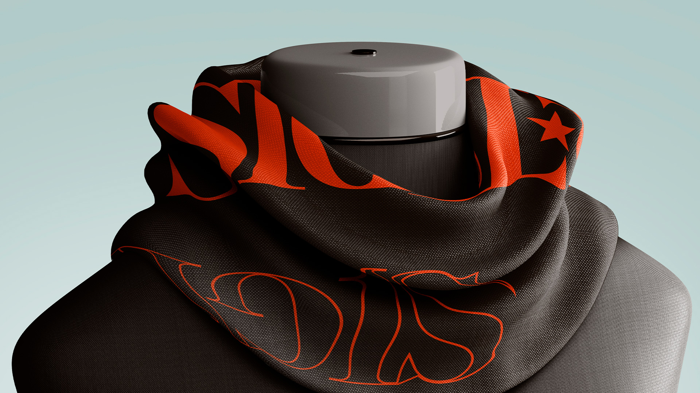
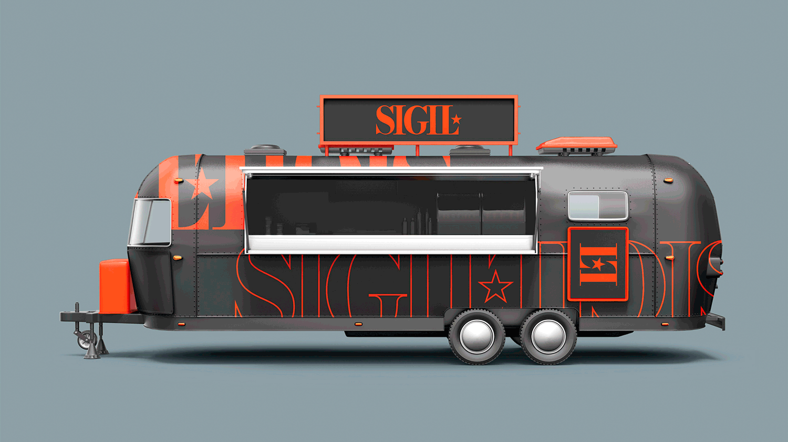
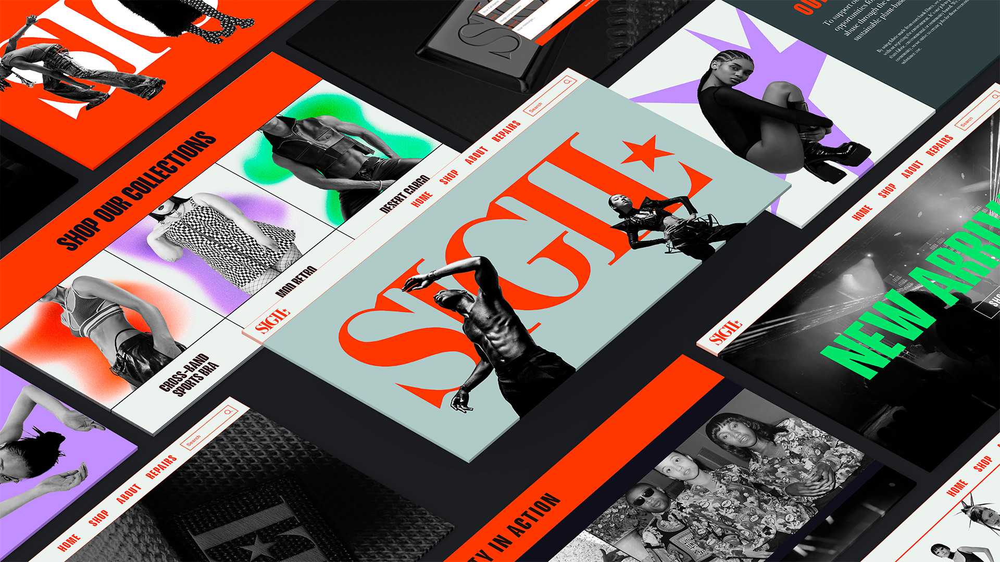

Hi, my name is Matthew Funk. I am a designer and illustrator who tries to connect deeply with people and the challenges they may face. I love problems with rigid boundaries; the smaller the box, the more I can think outside it. I love to express my personality and findings through creative endeavours, but I am first a listener. Listening fuels my growing understanding of the world and the people inside it.
© 2024 Matthew Funk